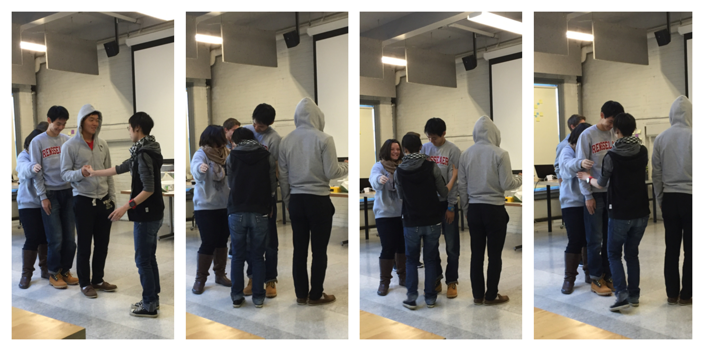
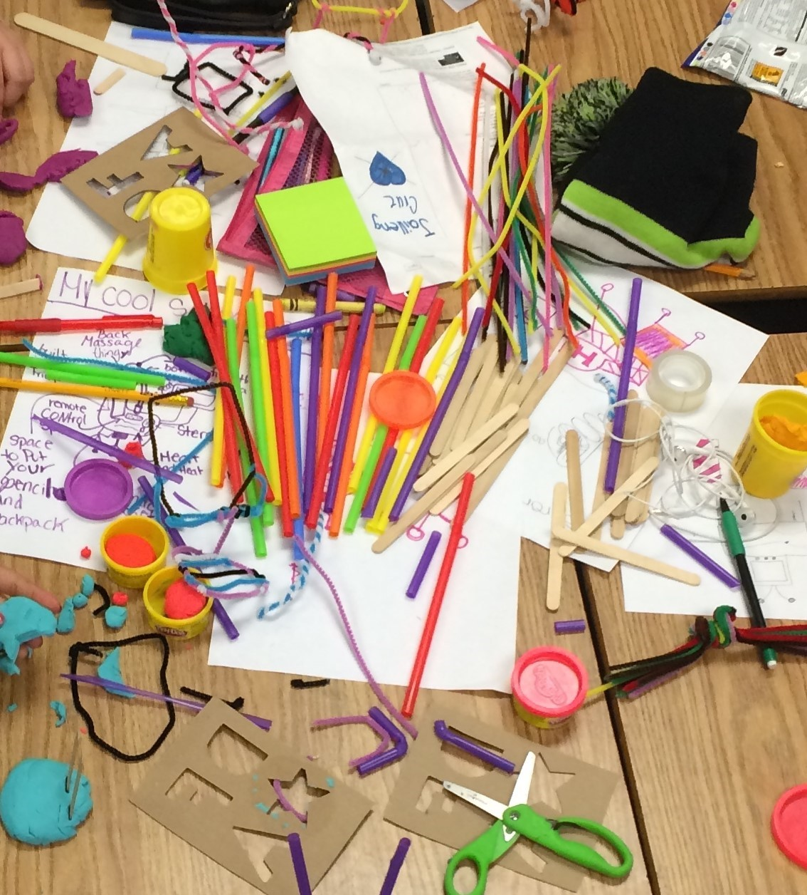
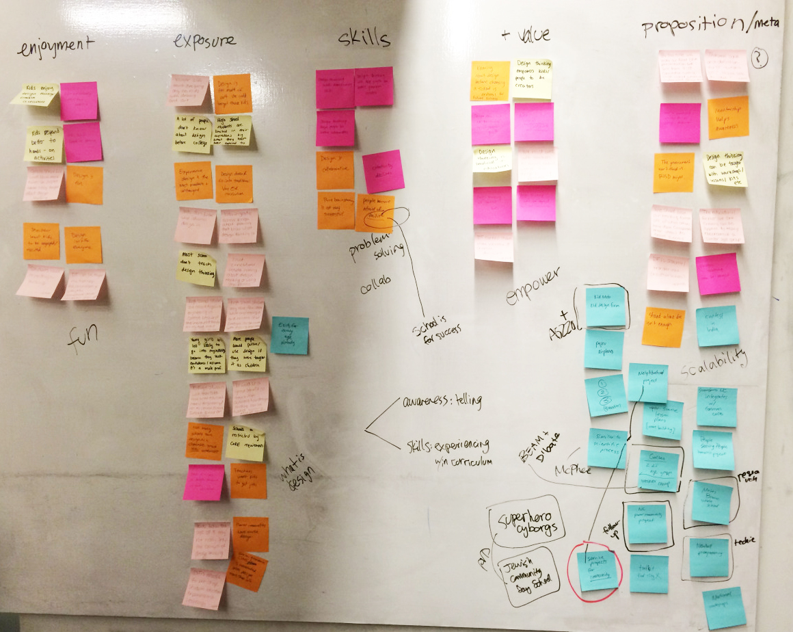

My Process
Indentify → Immerse → Reframe → Ideate → Build → Test
No matter how you describe it, I believe in iterative human-centered design processes - embracing failure and constantly pursuing improvement.
I bring human-centered processes and techiques everywhere I go. Below are some of my favorite tools!
Bodystorming
Bodystorming is an interactive design thinking method that falls into the Experience Prototyping category. The activity calls for participants to physically act out a product, system, or experience - embodying the human and non-human pieces to replicate the respective product, system, or experience.
I teach this method as one of my Design Thinking Modules for Product Design Innovation Studio I. In addition to getting students physically moving - and therefore, typically more engaged - it also forces students to think of products, systems, and experiences in a way they wouldn’t before. Students are forced to confront components or interactions they would usually neglect or take for granted - illuminating important aspects of these products, systems, and experiences.
Mockuptionary
Mockuptionary is a rapid design and prototyping activity which asks participants to develop inventions to fix nonsensical problems. These problems are defined by randomly picking two cards - one indicating a user and the other indicating a problem. To make the activity more difficult, sometimes a third pile of cards containing an additional constraint is included.
This forces participants to develop ridiculous solutions to combat ridiculous problems, with the ultimate goal of enabling participants to entertain these ridiculous ideas when brainstorming for long-term projects.
Some examples of pairs that have been randomly chosen are below:
- A scuba diver can’t stop crying.
- My chemistry book is on fire.
- My TA’s can’t stop, won’t stop dancing.
- My cat keeps prank calling the president.
- My piano ran away from home.
Co-Design

Co-design, or participatory design, is the process of engaging various stakeholders in the design research and concept development phases of design. This process enables stakeholders to feel more empowered to drive the design direction and enable both designers to develop better products, systems, and services thanks to insights from those who will be interacting with these products, systems, and services.
An example of a co-design session I developed - examining the current and desired healthcare journey are below!
Card Sorting
When starting a project, card sorting can help define areas for opportunity by allowing group members the opportunity to list and combine facets of a problem, product, or system.
Card sorting begins with group members listing as many facets as possible onto different index cards or post-its. Group members then converse and combine cards which have the same statements on them. They are then asked to categorize these cards however they see fit. This enables groups to create clusters of similarity and find the biggest areas for improvement.
I often use card sorting at the beginning of a project to enable team members to find areas of cognitive convergence and divergence in order to allow them to better understand each other assumptions and understanding of the problem statement.
100 Questions

100 Questions is a research and scoping activity used as a diagnostic tool to find gaps in knowledge and to assess areas of exploration necessary for improvement. The 100 questions are meant to be exhaustive and in turn, pressure the user to think outside of the current features and characteristics being developed.